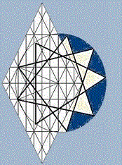

The Way of the Double Dalet
The Crown Diamond generates fractal geometry, which shoots off in all directions, as demonstrated by the measurements belonging to the seven stars of Revelation's Churches of Asia. These stars are formed by lines whose measurements are implied by the Crown Diamond. Metatron's Cube and similar images share the same mathematics, but the Crown Diamond demonstrates the relationship of sacred geometry and secular geometry. Further, its grid maps the alphanumeric features of ancient alphabets.
Not a mathematician by any means, I marvel at the movements of shapes and the interplay of letters and numbers implicit in the display, and I look forward to a day when we are blessed with a visceral understanding of sacred geometry. For the moment, however, I can only offer the observations that come to mind as I sort through my thought.
I hope you'll find these pages as interesting as I do: all these shapes, words, numbers, and their interactive dynamics derive from a common measurement: cubits of a man, the mathematics of the human form and the realities of life. The cubit that governs an individual is represented by the width of the symbol for the Tree of Life, when that symbol is drawn in scale with the biblical measurements for Noah's Ark.
There are two cubits: one for the individual; the other for the individual's life among family, friends, and foes. Every polygon in these displays is implied by the width of these cubits, which are also represented in the Key of David, which is central to the Crown Diamond. My method of discovery has been to choose an intersection of lines, which then served as the center of a circumscribed angle within the display. The end points of the operative cubit was then plotted repeatedly, end-to-end, along the circumferences, with the result that polygons of differing numbers were formed. I'm no mathematician, my guess is that there are other valid approaches for drawing out the logic of the display.
These pages merely introduce sacred geometry. They don't teach it.
{kind=link}